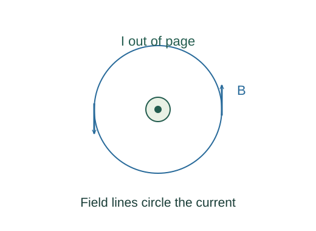

Derive the magnetic field of a long straight wire
Ampère’s law fixes magnetic circulation around a steady current. Cylindrical symmetry makes the field tangent to a circle and constant in magnitude on it.
What the symbols mean
I: enclosed steady current; r: perpendicular distance from a very long straight wire; μ₀: vacuum permeability.
When this applies
Magnetostatic current in an effectively infinite straight wire in vacuum. The exterior formula is used outside the wire radius.
Developing the argument

State the circulation law
For steady currents, the closed line integral of magnetic field is μ₀ times the current threading the loop.
Choose a symmetry-matched loop
The field wraps around the wire according to the right-hand rule. On a coaxial circle of radius r, it is tangent and has constant magnitude.
Evaluate the line integral
Every element contributes B dℓ with the same sign around the chosen direction. The circumference is 2πr.
Contrast the inside of a uniform wire
If current density is uniform in a wire of radius R, a smaller circle encloses I r²/R². The interior field grows linearly instead of diverging.
A worked example
A 10 A straight wire gives about 2.0 × 10⁻⁴ T at r = 1 cm in vacuum.
Derivation behind this calculation ↗A point to keep straight
Ampère’s law is always a circulation statement, but extracting B this way requires symmetry. A nearby return wire can spoil the single-wire approximation.
Check the assumptions and derivation ↗